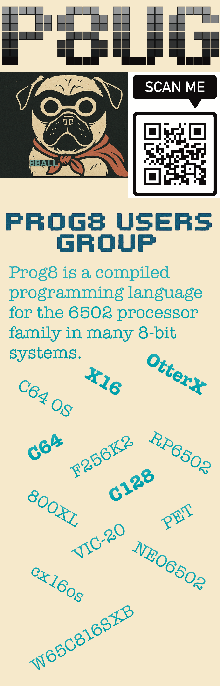

|
Menu Home About Downloads Docs Our Mascot's name is 8 Ball, he is a Pug! |
Which version should I try?There are two branches to know about right now: version 12 for the established 6502 projects, and version 14 if you want to try what is coming next. Here is a quick breakdown to help you pick a starting point. Last checked: 1 November 2026. Downloads and full release notes are hosted by Irmen on GitHub. Version 12.3.5 - latest stable, final v12 releaseReleased 29 October 2026. This is the last release in the version 12 series, with bug fixes and a small improvement to block aliases. If you are getting started on a C64, C128, or Commander X16, this is the stable release to start with.
Download the 12.3.5 compiler - Full release notes Version 14.0 betas - try the new stuffVersion 14 is still in beta. It adds experimental Motorola 68000/68020 support, including Amiga targets, along with language, library, and compiler changes. The new IR-based 6502 code generator is experimental too. Keep a copy of your working project and read the breaking changes before moving it over. Where is version 13? Irmen skipped it because he considers 13 unlucky. We go straight from 12 to 14! 14.0-BETA3 - latest betaReleased 27 October 2026. This is the beta to try first. It improves m68k register allocation and code generation, adds optimizations to the new 6502 backend, and expands jump-table and linked-list support. There are also new Amiga graphics helpers and fixes for pointers, boolean expressions, and block aliases. Download BETA3 - Full release notes 14.0-BETA2 - earlier betaReleased 10 October 2026. Introduced stack-based locals and parameters for ordinary m68k subroutines, allowing recursion and re-entrant calls. It also added union types, an exact output filename option, VERA64 libraries for the C64, and more Amiga libraries and examples. Download BETA2 - Full release notes 14.0-BETA1 - first betaReleased 14 September 2026. The first look at version 14 brought the experimental Amiga and Qemu m68k targets, a portable pointer type, and a 32-bit virtual target. Existing projects may need changes: the list module became lists, and the experimental 6502 compiler option became -newcodegen. Download BETA1 - Full release notes Ready to get going?The compiler runs on your modern computer. For 6502 targets you will need Java and the 64tass assembler, plus an emulator or real machine to run your program. The experimental m68k targets have their own tool requirements. Follow the documentation for your chosen version and machine. For older versions or releases published after this page was updated, visit all official releases. If you try a beta, come share how it went with the crew on Discord! |
 As seen in COMPUTE!'S GAZETTE! |